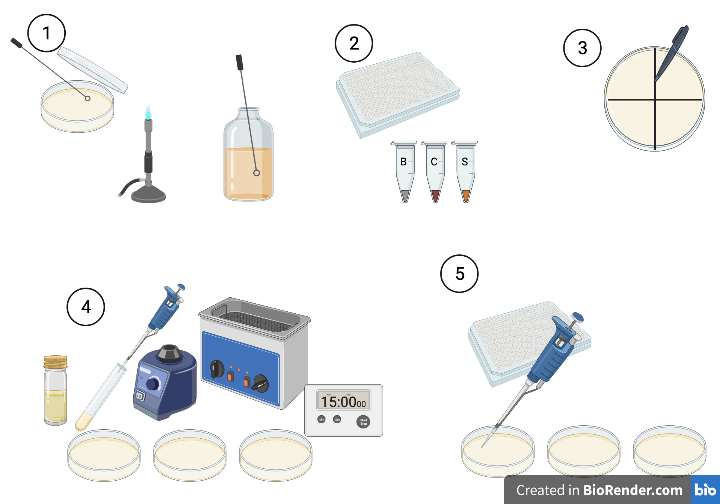

Week 2 Spot Assays and Purification
Last week, you prepared samples by enriching any phages that might be present for your pathogen. This week, we get to find out if your samples contained any suitable phages. We do this using something called a spot assay. Briefly, we add 5 µL of enriched viral lysate to a lawn of host culture. If there are suitable viruses present in the lysate, they will infect the cells in the lawn and start to replicate. Each round of replication releases more viruses, and a plaque begins to form, spreading outwards in a circular fashion from the initial infection. If you’re interested in how plaques form, I recommend reading the paper by (Abedon and Yin 2009).
2.1 Monday 24th May
Today, we set up the first spot assay to see if we have any viruses in your samples. To make the lawn of bacteria, you need to combine an exponentially growing host with soft agar, then pour it onto a bottom plate and swirl it round for even coverage. You need to work quickly. The molten agar is above the thermal tolerance of most host bacteria, so we need to minimise the time the host spends in hot agar. Once on the bottom plate, the hot agar sets quickly, so you need to swirl quickly to get even coverage before it solidifies.
We’ve set up three pouring stations with water baths containing glass test tubes with 3 mL molten top agar in them. Students will come up in turn and pour their host lawns. You’ll have one extra plate for a practice pour.

Step 1: Make a fresh overnight culture for tomorrow’s plaque assays. Flame an inoculation loop until it glows red and then allow it to cool. Pick 3-4 colonies from your overnight streak plate by dabbing the loop on them. Transfer the loop into fresh LB medium in a sterilin. Reflame your loop. Label the sterilin with your name, date and host name. Bring the new streak plate and overnight culture to the front for us to incubate.
Step 2: Collect your plate of phage lysates from last week and a culture of your host at \(OD_{600}\) of 0.6. You will also need 4 bottom agar plates. You’ll also need to collect a microcentrifuge tube of the phage lysate for your host from the chicken sample (C), and a microcentrifuge tube of the phage lysate for your host from the sewage sample (S).
Step 3: You’ll be putting 12 spots per plate (one per sample). I find the easiest way to do this is to divide your plate into quadrants, and then place three spots per quadrant. Draw two perpendicular bisecting lines on the bottom of each plate with a ruler to divide it into quadrants. Mark one edge with an arrow so we can orientate it. Label each plate with your name, the host bacterium, the date, and Plate 1 through Plate 3. Label the last plate Practice. On your three numbered plates, write the numbers of the samples where you are going to put them in the quadrants as shown here:
 where B is where you’ll put your blank, C is where you’ll put your chicken sample and S is where you’ll put your sewage sample.
where B is where you’ll put your blank, C is where you’ll put your chicken sample and S is where you’ll put your sewage sample.
- Step 4a: Bring your labelled plates and host culture to a pouring station. We’ll walk you through the process. Briefly vortex your host culture (1-2 seconds) to resuspend it. Under a blue flame, put your practice plate in front of you and take off the lid. Take the cap off of a tube of molten agar, but leave it in the water bath. Use a pipette to suck up 1 mL of host culture into a blue tip. Using the other hand, take the tube of molten agar out of the bath and add the 1 mL of culture to it. Immediately vortex the agar (1-2 seconds) to mix and pour quickly but smoothly into the centre of the practice plate. If there are any bubbles in the tube, they’ll come out last, and you want to leave them in the tube. Quickly place the tube into the waste beaker and swirl the plate to ensure even coverage of the agar across the surface. Put the lid back on the plate, but leave it with the agar on the bottom to allow the top agar to set. Slide the plate over to one side and repeat with your remaining three plates. Note the time or set a timer for 15 minutes.
- Step 4b: After 15 minutes, collect your plates (the top agar should now be set) and take them back to your work area. Spot assays work best if the phages are added shortly after the top agar has set.
- Step 5a: Under a blue flame, open up Plate 1 and spot 5 µL of sample from the first eleven samples of your 96 well plate, plus your blank onto their appropriate locations on the plate. To do this, gently push the liquid out of the pipette over the location, when it has formed a droplet, touch the droplet to the surface of the agar to transfer.
- Step 5b: Cover the plate and gently slide it to one side so as not to disturb the drops (or you get long, streaky plaques). As long as it is still near the blue flame, slide the lids partially to one side to speed up drying. DO NOT INVERT THE PLATE. It can take 20-30 mins outside of a flowhood for a droplet to dry, so we want to leave it as long as possible. Once the droplet is dry, any phages will diffuse through the agar and find their prey.
- Step 5c: Repeat the process with the remaining two plates and the remaining samples. As before, if you accidentally put a sample on the wrong spot, make a note of it so we can correct it later.
- Step 5d: When the last plate is dry, slide the lids back on and invert the plates. Bring the plates to the front and we will incubate them at 37 °C overnight to allow plaque formation. Put a PCR film on the 96-well plate of lysate plate and return it to the front (we’ll keep it just in case!)
2.2 Tuesday 25th May
It’s plaque-picking day! Hopefully, at least one of your samples will have yielded a plaque on one of the hosts we have attempted. With a bit of luck, you are now the discoverer of a new virus (or viruses!). At this stage, there is the possibility that each plaque comprises a mixture of phages.
If phages for the host are common in the sample, (e.g. E. coli phages in sewage), it’s quite likely that more than one suitable phage was in the original overnight inoculum. This is where infection efficiency comes into play in enrichment cultures - phages that replicate faster than other phages will produce more progeny. Following the first round of enrichment, the fastest phages will be the most abundant. The second round of enrichment in pure culture provides a second round of purifying selection. So, even if the initial sample had lots of suitable phages, it’s reasonably likely that by this stage, your lysate contains only one or two phages.
So, if we are interested in recovering the maximum diversity of phages from a sample, then enrichment is not advised, if samples contain lots of different phages. To maximise diversity, the best way is to just do directly spot the original sample on a lawn of bacteria and look for different plaque morphologies.
For our purposes, we use enrichment for two reasons: First, there are many hosts for which viruses are not common, so we need to amplify them up in order to isolate them. Second, even if a sample contains lots of suitable phages, the ones best suited for phage therapy are those that are the fastest replicating, most virulent phages for that host - i.e. the ones that would be victorious in purifying selection during enrichment.
There is still the risk though that we have multiple fast replicating phages in our lysate. If we were to extract DNA from these now and then sequence them, we run the risk of combining the genomes of two phages. Even if we can assemble them into individual phage genomes, we could end up with a mixture of phages where one is suitable for therapeutic use and the other isn’t. So, we need to purify them into an axenic culture.
We do this through something called ‘Dilution to Extinction’ purification. Briefly, we take a plaque sample, then use it to make a dilution series. We plate out each dilution in a spot assay until we can see individual plaques.

We then pick a plaque that is from the greatest amount of dilution (lowest concentration of phages). It is possible that there could still be more than one phage in this plaque, if we were unlucky, so we repeat the process another two times. For the rest of this week, we will be performing these purification steps.
Step 1: Make a fresh streak plate of your assigned culture. Flame an inoculation loop until it glows red and then allow it to cool. Pick 3-4 colonies from your overnight streak plate by dabbing the loop on them. Streak them down one side of a petri dish containing LB + agar. Reflame your loop, allow to cool and drag one side perpendicular to the original streak. Turn your plate 90° and repeat. Label with your name, date and host name.
Step 2: Make a fresh overnight culture for tomorrow’s plaque assays. Flame an inoculation loop until it glows red and then allow it to cool. Pick 3-4 colonies from your overnight streak plate by dabbing the loop on them. Transfer the loop into fresh LB medium in a sterilin. Reflame your loop. Label the sterilin with your name, date and host name. Bring the new streak plate and overnight culture to the front for us to incubate.
Step 3: Collect your plates from the front and note the samples for which you have plaques. Make a record of the features of the plaque (We’ll take photos of each plate with plaques).
How big is it? Plaque size is a function of how easily the virus diffuses through the medium (e.g. size) and how fast it replicates - plaques stop growing when the hosts reach stationary phase in the medium. The faster it replicates, the greater the number of replication cycles, the larger the plaque.
Does it have a halo? A halo is a good indicator of a virulent phage with an explosive escape from the cell powered by lysins. Lysins continue to diffuse through the medium and kill hosts after the viral plaque has stopped growing, creating a halo.
Is the centre clear or cloudy? Cloudy plaques are usually a good indicator of a temperate phage. Temperate phages confer superinfection immunity to the cell, preventing infection from other similar phages. Protected from lytic infection in this way, the cells can continue to replicate in the plaque, causing it to be cloudy. It doesn’t reach the same density as the surrounding lawn because the lytic/lysogenic switch is a stochastic process, so some killing continues.
You have been assigned three phages from your samples on the spreadsheet here
- Step 4a: Label a microcentrifuge tube containing 100 µL of SM buffer with the phage identifier (e.g. P1), the host and your name.
- Step 4b: Under a blue flame, take the lid off of your plate. Set a 1000 µL pipette to 200 µL. Using a blue pipette tip take a core of the plaque (we’ll show you how to do this) and eject the agar core into the 100 µL of SM buffer. Vortex the microcentrifuge tube for 2-3 seconds, leave for 5 minutes then vortex again for 2-3 seconds. The viruses will be released from the agar into the SM buffer.

Step 5a: Into a 96 well plate, set up a dilution series in a row for each plaque you have picked. Pipette 90 µL of SM buffer into wells 2 through 11 (ignore columns 1 and 12). You can use the same pipette tip for each row.
Step 5b: Pipette 100 µL from your microcentrifuge tube into column 1.
Step 5c: Pipette 10 µL from column 1 into column 2 and mix with gentle pipetting.
Step 5d: Pipette 10 µL from column 2 into column 3 and mix with gentle pipetting.
Step 5e: Pipette 10 µL from column 3 into column 4 and mix with gentle pipetting.
Step 5f: Repeat this process of adding 10 µL of mixture from column \(n\) into \(n+1\) and mixing until you’ve added 10 µL to column 11 and mixed.
Step 5g: Change your pipette tip and do this each microcentrifuge tube you have, with each going into column 1 on a different row.
Step 6a: Collect a bottom agar plate for every row you have filled on your 96-well plate.
Step 6b: Divide it into quadrants and mark the locations of the dilution series as shown in the figure below.

The numbers correspond to the columns of the plate. To convert to dilution factor, we subtract 1 and raise it to the power of 10, e.g. Position 1 is undiluted (\(10^{0}\)), Position 2 is a 10-fold dilution (\(10^{1}\)) etc. Label the plate with your name, the host name, the date and the sample number from which the plaque was picked.
- Step 7: Using the same protocol as yesterday, visit a pouring station and make a lawn of bacteria on your plates and allow to set for 15 mins before taking them back to your bench.
- Step 8: Using the same method as yesterday, spot 5 µL from each well in a row of your 96-well plate onto their assigned position on the plate. Onto the blank (B), pipette 5 µL of SM buffer. We want to make sure any ‘plaque’ is a result of viral infection, not an interaction with the buffer. Allow the spots to dry before inverting your plate and bringing it to the front for us to put in an incubator overnight.
2.3 Wednesday 26th May
Hopefully, following overnight culture, your plates will look something like this:
The next step is to core an individual plaque from the largest dilution number (e.g at \(10^{-9}\) here) and repeat the dilution to extinction process.
Step 1: Make a fresh overnight culture for tomorrow’s plaque assays. Flame an inoculation loop until it glows red and then allow it to cool. Pick 3-4 colonies from your overnight streak plate by dabbing the loop on them. Transfer the loop into fresh LB medium in a sterilin. Reflame your loop. Label the sterilin with your name, date and host name. Bring the new streak plate and overnight culture to the front for us to incubate.
Step 2: Label a microcentrifuge tube containing 100 µL of SM buffer with the number of the sample, the host and your name for each plate from yesterday.
Step 3: Under a blue flame, take the lid off of your plate. Take a core of an individual plaque from the largest dilution number. If you have clearly distinct plaque morphologies at high dilutions, it could be an opportunity to isolate another phage, so let us know!
Step 4: Add the core to the 100 µL of SM buffer, vortex, let sit and vortex again as you did yesterday.
Step 5: Set up your dilution series on a 96-well plate as you did yesterday.
Step 6: Collect your bottom agar plates and label them up as you did yesterday (date, sample, name, host, plus dilution well in quadrants).
Step 7: Prepare your bacterial lawns at a pouring station.
Step 8: Under a blue flame, spot 5 µL of each dilution onto the freshly set lawn in the appropriate position and allow to dry.
2.4 Thursday 27th May
Final Round! Today we repeat what we did yesterday for the final round of purification. At the end of this, plaques are virtually certain to be axenic.
Volunteers Required if you are using E. coli as a host: As a positive control for our sequencing, we are going to grow a culture of Escherichia phage T4. Because the genome of this is well known, we will be able to evaluate how well we are recovering the genome and the error rate of the reads pre- and post error correction. We can then assume that the same degree of error (should be very small) is found in our novel phage genomes. If you can fit it onto one of your dilution plates, create an extra spot called ‘T4’ and spot 5 µL of the stock culture we have onto that plate. Because it’s already pure, we don’t need to go through multiple rounds of purification.
2.5 Friday 28th May
We should now have plaques that are single axenic viral cultures. Now we need to bulk them up for sequencing and imaging and for making viral stocks for future use. We will do this by picking a plaque and adding it to an exponential culture of host. In total, we need about 40 mL of host per phage (30 mL for DNA extraction, 500 µL for imaging and the remainder for putting into long term phage storage as part of the Citizen Phage Library). You can’t grow 40 mL of culture in a single Falcon tube - it doesn’t have enough headspace for gas exchange and there’s too much liquid for efficient mixing. So, we’re going to grow it up as two 20 mL cultures and then combine them.
Repeat the following for each phage:

- Step 1: Under a blue flame, core a plaque from your highest dilution just like before and place it in a 100 µL of SM buffer in a microcentrifuge tube. Label the tube with the host and the sample number.
- Step 2: Vortex briefly and leave it for five minutes before vortexing again.
- Step 3a: Add 50 µL of the SM buffer with your core to a Falcon tube containing 20 mL of LB + 10 mM \(MgCl_{2}\) + 10 mM \(CaCl_{2}\).
- Step 3b: Add a second aliquot of 50 µL of the SM buffer with your core to another Falcon tube containing 20 mL of LB + 10 mM \(MgCl_{2}\) + 10 mM \(CaCl_{2}\).
- Step 3c: Label each Falcon tube with your name, the host, the date and the sample number the phage came from.
- Step 4: Into each Falcon tube, add 500 µL of overnight host culture. Vortex briefly and return the tubes to the front so we can put them in the incubator. Each student should have six tubes (two per phage).
- Step 5: Return your plaques to the front - we’ll keep them just in case we need to take new plaques.
We’ll put your tubes into an incubator at 37 °C overnight and come in tomorrow to transfer them to the fridge for Tuesday. On Tuesday morning, we will centrifuge them at 10,000 \(\times g\) for 30 minutes at 4 °C to pellet the cell debris and leave the viruses in the supernatant.
We’ll also create one 20 mL culture of each host with no phages so we can monitor differences between infected and uninfected cultures as a check of whether an active infection is occuring (lower \(OD_{600}\), more debris at the bottom of the Falcon tube, colour change in cultures).
Finally, we’ll pick a good T4 plaque and inoculate two 20 mL cultures of E. coli for our positive control.
References
Abedon, Stephen T, and John Yin. 2009. “Bacteriophage Plaques: Theory and Analysis.” Edited by Martha R J Clokie and Andrew M Kropinski, 161–74.